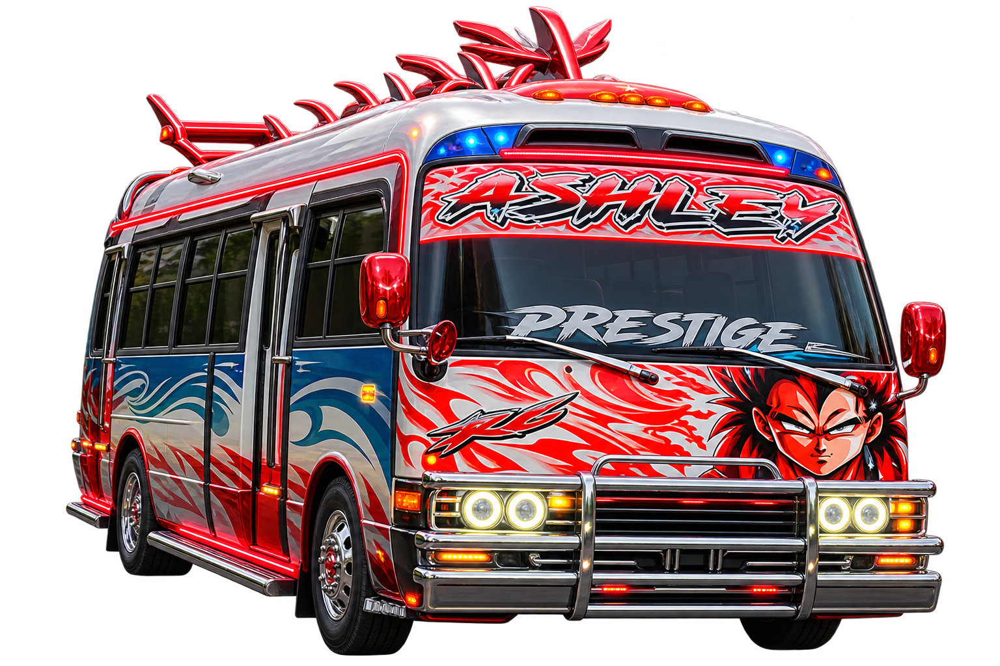
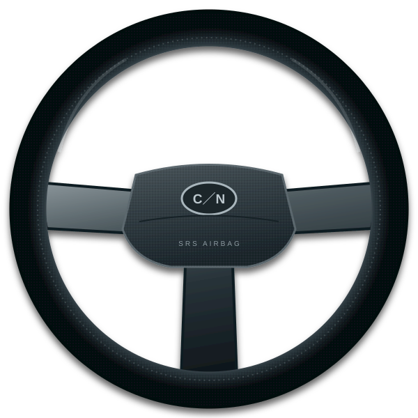

DRIVER 01 · EL SALVADOR
EL PRESIDENTE
Estilo propio. Presencia en la pista.
Cuscatlán Racing se juega en horizontal.
Desactiva el bloqueo de rotación si es necesario.
Elige tu coaster. Enciende el neón.
Deja tu marca en el asfalto.
COLÉCTALAS EN LA PISTA
🟠 Kolashampan +25 % 🥛 Horchata nitro al 100 %

Tu piloto para conquistar la calle.
Estilo propio. Presencia en la pista.
